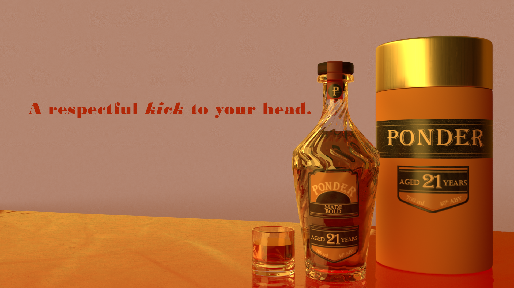
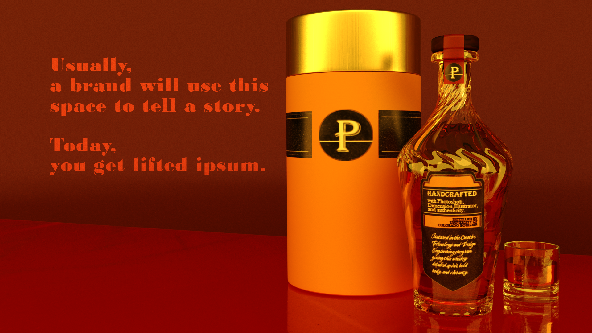

I am "A respectful kick to your head"
This is the front display for the personal branding project.
The product staging evokes a sense of play and mischief while also tempting classic whiskey drinkers with the promise of a memorable experience.
This is the back display for the personal branding project.
The text on this product shot is meant to show potential employers I composed the product shot with marketing intentionality while reinforcing the overall brand identity.